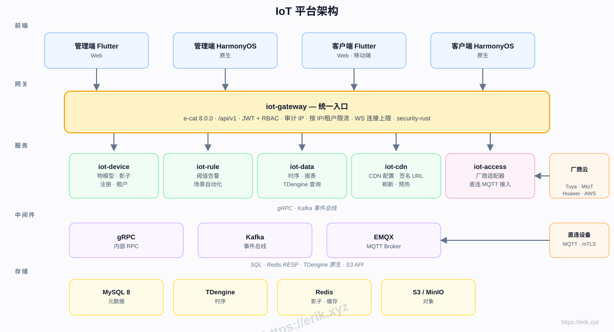
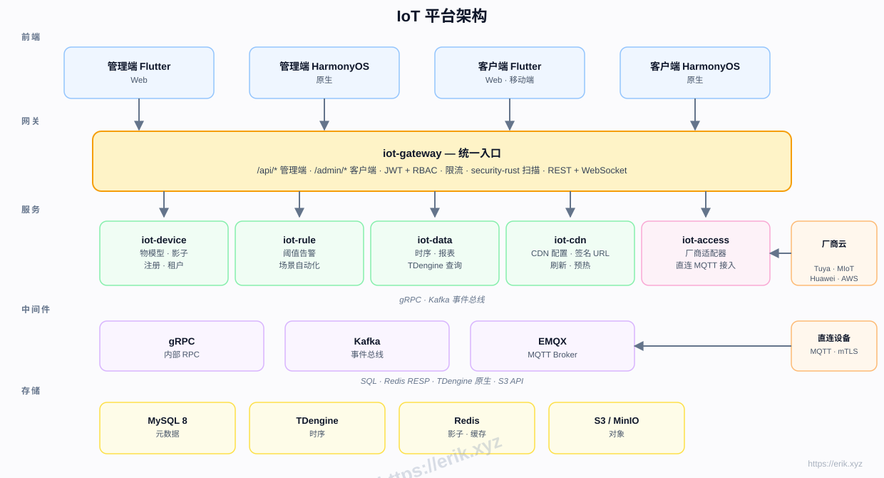
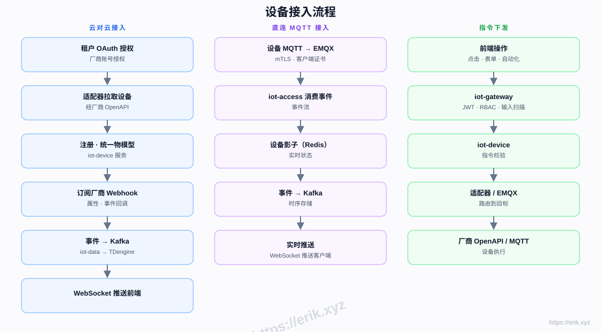
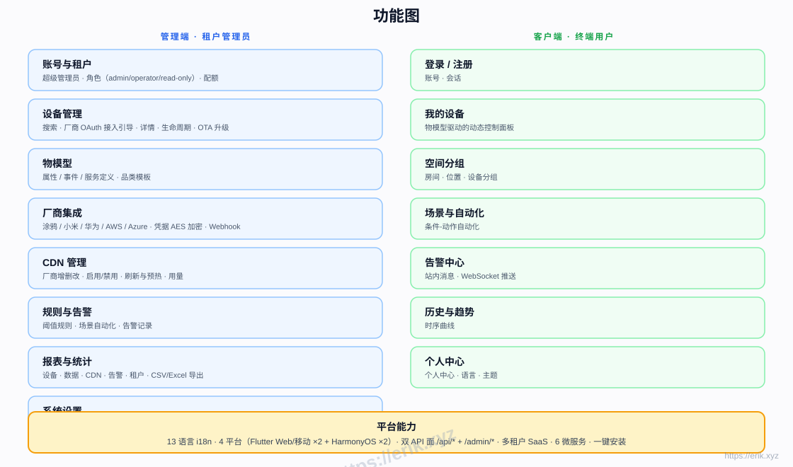
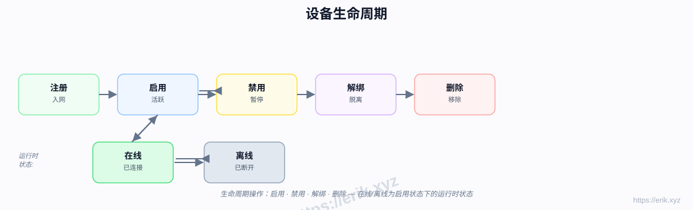
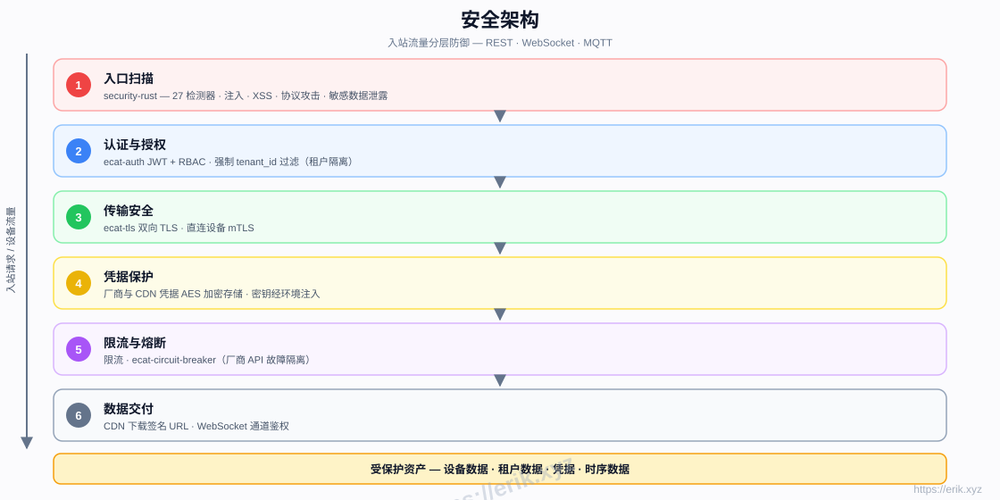

涂鸦、小米、华为、AWS、Azure 云对云 OAuth 与 MQTT mTLS 直连。
SCROLL TO EXPLORE
01 / 项目介绍
关于IoT 物联网平台
适用场景 / WHO IT'S FOR
设备厂商物联网方案商多租户 SaaS 运营商硬件开发者
RustaxumtokiogRPCFlutterHarmonyOS ArkTSEMQXKafkaMySQL 8TDengine
物联网管理平台面向设备厂商、方案商与多租户 SaaS 运营方，统一接入涂鸦、小米、华为、AWS IoT、Azure IoT 等主流生态，提供设备管理、物模型、规则告警、时序数据与多端应用，让不同厂商的设备在同一个平台纳管与运营。
后端采用 Rust e-cat 微服务工作区，按网关、设备、接入、数据、规则、CDN 拆分为 6 个服务；EMQX 承载 MQTT、Kafka 事件总线，MySQL 与 TDengine 分别存储元数据和时序数据，Flutter Web/Mobile 与 HarmonyOS 四端共用一套 API。
典型闭环是：管理员在管理端创建租户与设备，选择厂商 OAuth 云对云接入或 MQTT mTLS 直连；接入服务完成认证后由设备服务维护生命周期，物模型驱动客户端面板渲染。设备上报数据经 Kafka 进入数据服务并写入 TDengine，规则引擎命中阈值后通过 WebSocket 推送告警。
平台按领域拆成 6 个 Rust 微服务，避免单体 IoT 系统在设备量增长后互相拖累；元数据留在 MySQL，时序数据交给 TDengine，Redis 只承载影子与缓存，Kafka 解耦上报与规则计算。云对云适配器与直连 MQTT 并存，让不同厂商设备都能以统一物模型接入。
13语言 i18n
6业务微服务
MQTT设备接入
TDengine时序存储
mTLS双向认证
四端多端应用
02 / 功能迭代
功能，长在真实场景里
以下为当前版本的核心能力切片；完整演进记录见版本日志。
属性、事件、服务统一定义，客户端控制面板按模型动态渲染。
注册、启用、禁用、解绑、删除全流程，实时同步在线状态。
阈值规则与场景自动化，触发后经 WebSocket 实时推送。
TDengine 存储历史曲线，支持 CSV / Excel 导出与多维报表。
多厂商配置、启停、刷新预热与签名 URL 下发。
租户隔离、配额与 admin / operator / read-only 角色权限。
JWT + RBAC、双向 TLS、凭据 AES 加密、限流与熔断。
← 左右滑动查看 →
03 / 前后台功能
一套系统，两种视角
管理后台负责经营与治理，客户端负责用户体验；两边共用同一套业务与权限边界。
ADMIN
管理端
- 设备管理
设备注册、分组、在线状态与生命周期操作。
- 物模型
品类属性、事件与服务建模。
- 厂商接入
涂鸦、小米、华为、AWS、Azure OAuth 接入。
- 规则告警
阈值规则、场景自动化与告警记录。
- 数据报表
历史曲线、多维报表与 CSV/Excel 导出。
- CDN 管理
厂商配置、刷新、预热与签名 URL。
- 租户权限
租户、配额与 admin/operator/read-only 角色。
- API 密钥
管理开放 API 密钥与访问范围。
CLIENT
客户端
- 设备控制
按物模型动态渲染面板并下发指令。
- 实时状态
查看设备在线状态与属性变化。
- 告警通知
通过 WebSocket 接收规则触发通知。
- 历史数据
查看设备历史曲线与用量趋势。
- 场景联动
执行手动场景与自动化任务。
- 多端访问
Flutter Web/Mobile 与 HarmonyOS 客户端。
- 多语言
13 语言界面切换。
04 / 项目规划
从当前版本，走向下一站
已交付、进行中与下一步，按真实里程碑排列。
骨架
仓库结构、网关、设备服务与 Docker 编排。
已完成设备接入
iot-access、涂鸦适配器与 MQTT 直连接入。
已完成时序数据
iot-data、TDengine 历史曲线与统计。
已完成规则告警
iot-rule 阈值告警与场景自动化。
已完成多厂商与 CDN
小米、华为、AWS、Azure 适配器与 iot-cdn。
已完成多端前端
管理端与客户端 Flutter、HarmonyOS 全端。
已完成上线收尾
安全加固、压测、OTA 与生产发布。
进行中05 / 架构设计
结构，决定能走多远
设备经云对云 OAuth 或 MQTT mTLS 接入 iot-access 并绑定物模型；数据经 Kafka 写入 TDengine，iot-rule 判断阈值后由 WebSocket 推送。iot-gateway 统一对外 API，MySQL、Redis、MinIO 承载元数据、缓存与对象存储。
L01
设备接入云对云 OAuth · MQTT mTLS · EMQX
多厂商云对云适配与设备直连认证。
L02
服务网关Rust axum · gRPC · JWT
统一 API、鉴权、限流与内部 RPC。
L03
业务服务iot-device · iot-rule · iot-data
设备、接入、规则、数据与 CDN 五域拆分。
L04
事件与存储Kafka · MySQL · TDengine · Redis · MinIO
事件总线、元数据、时序、影子与对象存储。
L05
客户端Flutter Web/Mobile · HarmonyOS ArkTS
管理端与客户端共四端，支持 13 语言界面。

后端
RustaxumtokiogRPC
数据
MySQL 8TDengineRedisS3 / MinIO
客户端
Flutter WebFlutter MobileHarmonyOS ArkTS
基础设施
EMQXKafkaDocker Compose
模块全景 / MODULE MAP
06 / 安全与可靠性
安全，不是最后补的
从边界、身份、数据到故障，每一层都按“默认不信任”设计。
入站扫描
security-rust 对入站请求做攻击与载荷检测。
认证授权
JWT + RBAC，admin / operator / read-only 分级。
双向 TLS
MQTT mTLS 校验设备证书，拒绝未授权终端。
凭据加密
厂商凭据 AES 加密存储，最小化明文暴露。
租户隔离
租户级数据隔离与配额限制，防止越权访问。
流量防护
网关限流与熔断，隔离异常租户与故障依赖。
默认不信任 · 最小权限 · 全链路可审计
07 / 设计思路
取舍，写在代码之前
从业务边界到代码边界，以下是这个项目反复坚持的设计原则。
领域拆分
按网关、设备、接入、数据、规则、CDN 拆服务，设备量增长时独立扩容。
冷热分存
元数据进 MySQL，时序进 TDengine，Redis 只做影子缓存，避免互相拖慢。
统一物模型
各厂商差异收敛在适配器，客户端只面对属性、事件、服务。
事件解耦
Kafka 连接上报与规则计算，削峰并允许规则独立消费重放。
08 / 项目宠物
笑 / SMILE
IoT Bot
蓝身机器人，头顶信号天线、胸前状态灯，呼应设备接入与实时在线的物联世界。
09 / 安装部署
把它跑起来
按 README 的主路径整理，先把最小可用环境跑通。安装截图 →
Docker 24+docker composeRust 1.80+8080-8085 端口空闲3306/6379/1883/9092/6041 端口空闲
01
获取代码
克隆仓库并进入项目目录。
git clone <repo> && cd iot-platform02
一键安装
启动基础设施、构建 6 个业务服务并生成 .env。
./scripts/install.sh03
检查基础设施
确认 MySQL、Redis、EMQX、Kafka、MinIO 与 TDengine 已就绪。
docker compose ps04
启动业务服务
按脚本末尾输出的命令逐个启动 6 个业务服务。
05
登录管理端
使用 README 中的默认管理员账号登录管理端。
10 / 使用教程
从第一次登录，到完整跑通
按最小操作路径整理，覆盖后台配置、客户端使用与关键接口。界面截图 →
使用默认管理员账号登录，进入租户 tenant-1。
选择厂商 OAuth 接入或 MQTT 直连并填写设备信息。
为设备品类添加属性、事件与服务。
设置阈值规则与场景自动化并启用推送。
在历史数据页查看曲线并导出 CSV / Excel。
配置 CDN 厂商，执行刷新、预热与签名 URL。
11 / 项目图集
把界面和架构摊开看
安装向导、管理后台、客户端与设计图；点击任意图片放大查看。





12 / 打赏支持
如果这个项目帮到了你
微信或支付宝扫码支持，点击二维码可放大查看。
感谢每一份支持，项目会持续维护与迭代。
13 / 版本日志
每一次迭代，都有迹可循
当前最新 v1.16.1，公开版本持续更新。
v1.16.1
授权改为仅限个人使用；更新 README 与多语言文档。
v1.16.0
版本发布
v1.15.0
版本发布
v1.14.0
版本发布
v1.13.0
版本发布
v1.12.0
版本发布
v1.11.0
版本发布
v1.10.0
版本发布